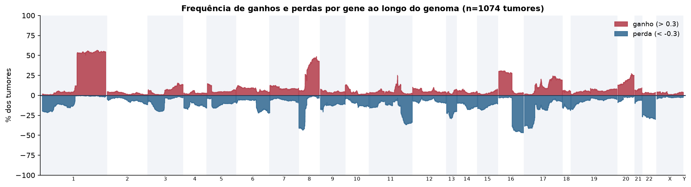
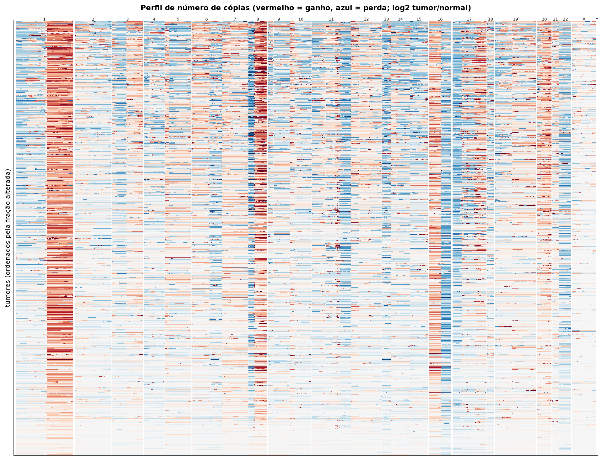
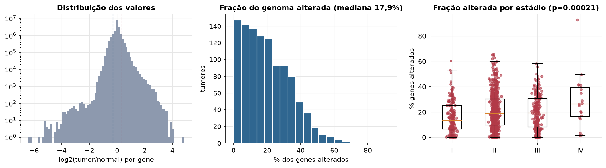
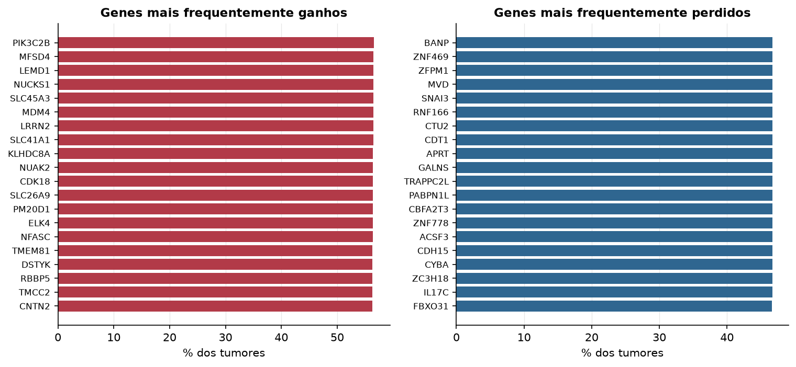

BRCA · Número de cópias (CNV)
Affymetrix SNP6, segmentos whitelisted do PanCanAtlas · gerado em 21/10/2026 19:17
1.074tumores
17.738genes
17,9%fração alterada mediana
152segmentos/tumor (mediana)
Fonte: SNP6 whitelisted (PanCanAtlas); nível de gene calculado dos segmentos (hg19)
O valor por gene é o do segmento que cobre o meio do gene (log2 tumor/normal, hg19). Sem correção de pureza e ploidia: tumores com pouca célula tumoral têm valores atenuados. Para chamadas discretas (−2 a 2), use o GISTIC2 do PanCanAtlas ou o ABSOLUTE.
Principais resultados
- Mediana de 17,9% dos genes com ganho ou perda por tumor (limiares log2 de 0.3 e -0.3).
- O cromossomo com mais ganhos em média é o 8 (28,1% dos tumores por gene) e o com mais perdas é o 22 (24,5%).
- Genes mais ganhos: PIK3C2B (57%), MFSD4 (57%), LEMD1 (57%), NUCKS1 (57%), SLC45A3 (57%), MDM4 (57%). Genes mais perdidos: BANP (47%), ZNF469 (47%), ZFPM1 (47%), MVD (47%), SNAI3 (47%), RNF166 (47%).
- Fração alterada por estádio: Kruskal-Wallis p=0.00021.
Paisagem ao longo do genoma


Carga de alterações

Genes recorrentes

Top 25 genes por frequência de ganho
| gene | chrom | % ganho | % perda | média log2 |
|---|---|---|---|---|
| PIK3C2B | 1 | 56.6 | 0.2 | 0.364 |
| SLC45A3 | 1 | 56.5 | 0.4 | 0.362 |
| LRRN2 | 1 | 56.5 | 0.4 | 0.362 |
| SLC41A1 | 1 | 56.5 | 0.4 | 0.361 |
| MDM4 | 1 | 56.5 | 0.2 | 0.364 |
| MFSD4 | 1 | 56.5 | 0.4 | 0.362 |
| NUCKS1 | 1 | 56.5 | 0.4 | 0.362 |
| LEMD1 | 1 | 56.5 | 0.4 | 0.36 |
| KLHDC8A | 1 | 56.4 | 0.3 | 0.362 |
| NUAK2 | 1 | 56.4 | 0.3 | 0.362 |
| PM20D1 | 1 | 56.4 | 0.4 | 0.361 |
| CDK18 | 1 | 56.4 | 0.4 | 0.36 |
| ELK4 | 1 | 56.4 | 0.4 | 0.361 |
| NFASC | 1 | 56.4 | 0.5 | 0.361 |
| SLC26A9 | 1 | 56.4 | 0.4 | 0.36 |
| TMCC2 | 1 | 56.3 | 0.4 | 0.36 |
| TMEM81 | 1 | 56.3 | 0.4 | 0.362 |
| DSTYK | 1 | 56.3 | 0.4 | 0.36 |
| RBBP5 | 1 | 56.3 | 0.4 | 0.36 |
| CNTN2 | 1 | 56.3 | 0.4 | 0.361 |
| PLEKHA6 | 1 | 56.2 | 0.2 | 0.362 |
| PPP1R15B | 1 | 56.2 | 0.2 | 0.364 |
| SRGAP2 | 1 | 56.1 | 0.7 | 0.356 |
| AVPR1B | 1 | 56.1 | 0.6 | 0.355 |
| IL24 | 1 | 56.1 | 0.5 | 0.358 |
Top 25 genes por frequência de perda
| gene | chrom | % ganho | % perda | média log2 |
|---|---|---|---|---|
| BANP | 16 | 3.4 | 46.7 | -0.253 |
| ZNF469 | 16 | 3.4 | 46.7 | -0.253 |
| ZFPM1 | 16 | 3.4 | 46.7 | -0.253 |
| MVD | 16 | 3.4 | 46.7 | -0.253 |
| SNAI3 | 16 | 3.4 | 46.7 | -0.253 |
| RNF166 | 16 | 3.4 | 46.7 | -0.253 |
| CTU2 | 16 | 3.4 | 46.7 | -0.253 |
| CDT1 | 16 | 3.4 | 46.7 | -0.253 |
| APRT | 16 | 3.4 | 46.7 | -0.253 |
| GALNS | 16 | 3.4 | 46.7 | -0.253 |
| TRAPPC2L | 16 | 3.4 | 46.7 | -0.253 |
| PABPN1L | 16 | 3.4 | 46.7 | -0.253 |
| CBFA2T3 | 16 | 3.4 | 46.7 | -0.253 |
| ZNF778 | 16 | 3.4 | 46.7 | -0.253 |
| ACSF3 | 16 | 3.4 | 46.7 | -0.253 |
| CDH15 | 16 | 3.4 | 46.7 | -0.253 |
| CYBA | 16 | 3.4 | 46.7 | -0.253 |
| ZC3H18 | 16 | 3.4 | 46.7 | -0.253 |
| IL17C | 16 | 3.4 | 46.7 | -0.253 |
| HSDL1 | 16 | 3.1 | 46.6 | -0.254 |
| HSBP1 | 16 | 2.8 | 46.6 | -0.255 |
| FBXO31 | 16 | 3.4 | 46.6 | -0.255 |
| JPH3 | 16 | 3.3 | 46.6 | -0.255 |
| MAP1LC3B | 16 | 3.4 | 46.6 | -0.255 |
| SLC38A8 | 16 | 3 | 46.6 | -0.254 |